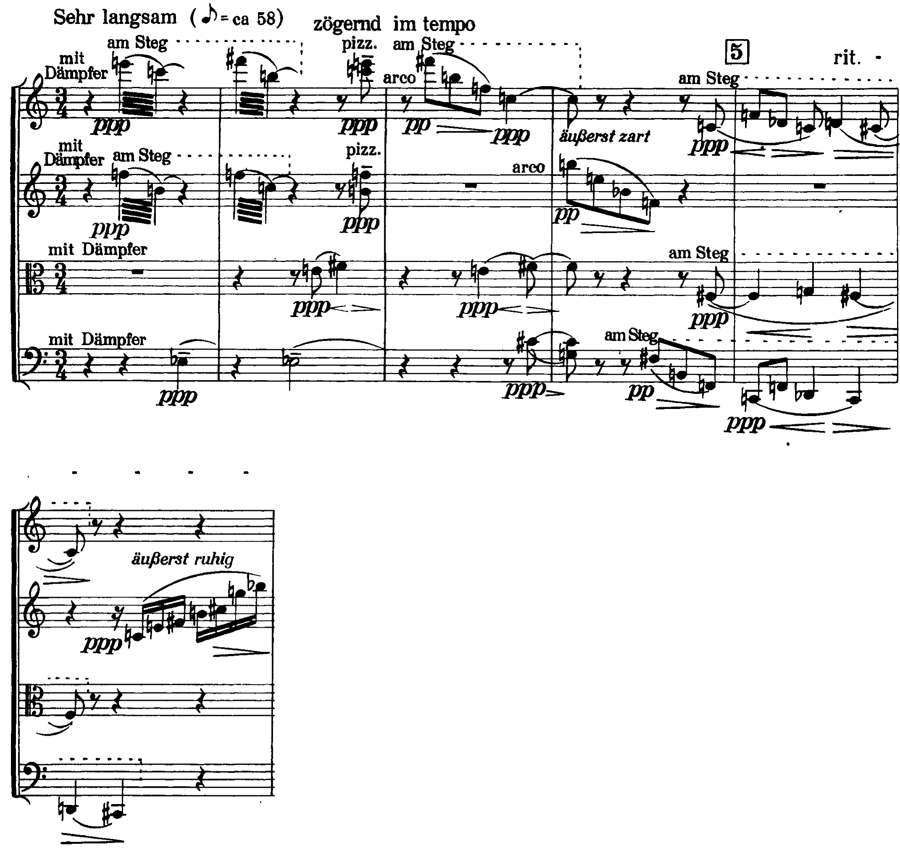
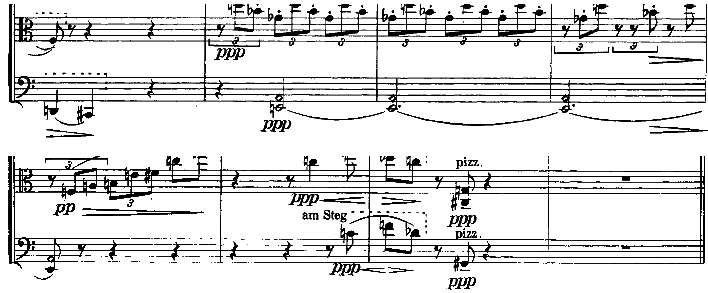

Il quarto dei Cinque movimenti per quartetto d’archi op. 5 (1909): tremoli al ponticello, pizzicati, armonici, e un solo tetracordo che apre e chiude il pezzo.
micro-cellule sonore che emergono dal silenzio — e in esso ritornano
C. Galli, Storia della musica 3, p. 336, sulla poetica di Webern
I Fünf Sätze op. 5 sono del 1909, l’anno dell’op. 11 di Schönberg (lezione 1). Per Surian la «tendenza ad una contrazione aforistica è più visibile in Webern», e i Fünf Sätze «sono di una concentrazione estrema» (Manuale di storia della musica, IV, p. 129); Salvetti osserva che l’op. 5 «aveva compresso in dimensioni piccolissime tutti i possibili contrasti», fino a impiegare ogni effetto dell’arco, «pizzicato, sordina, armonici, “col legno”, “al ponticello”» (La nascita del Novecento, pp. 194–195). Il quarto movimento dura tredici battute in 3/4, Sehr langsam (croma = 58 circa), tutti gli strumenti con sordina. La partitura prescrive per quasi ogni nota un modo d’attacco: am Steg (al ponticello), pizz., arco, armonici; le dinamiche non superano il pp e scendono spesso al ppp; il tempo oscilla di continuo (zögernd, rit., tempo, verklingend).
| Sezione | Battute | Materiale | Insiemi | Indicazioni |
|---|---|---|---|---|
| A | 1–6 | tremoli dei violini al ponticello; pizzicati; linee che scendono (violino I, violino II, violoncello); la viola sul semitono mi–fa♯–sol | 4-8, 4-9, 3-5; 6-5 alla b. 2 | Sehr langsam, ppp, zögernd, rit. |
| B | 7–10 | ostinato pizzicato della viola in terzine; linea del violino I; si3 del violino II e mi4 armonico del violoncello tenuti | 3-12 (viola); 4-17 (violino I) | tempo, so zart als möglich, verklingend |
| A′ | 10–13 | la viola sale con l’arco; armonici del violino I; ottave do–fa e re♭–do; un accordo pizzicato; la quintina del violino II | 7-19 (viola); 3-5; 4-9 alla b. 12; 5-18 | tempo, rit., flüchtig |
Descrivere un pezzo di Webern soltanto come «timbro e silenzio». Il timbro conta, ma le altezze sono scelte con la stessa cura: i suoni di ogni gesto si possono contare, e mostrano che il pezzo è costruito su pochissime classi.

Le prime due battute sono fatte di gesti brevissimi separati da pause: due tremoli simultanei dei violini al ponticello, ppp (b. 1: mi6–do6 e fa5–si4; b. 2: fa♯6–si5 e fa5–do5), un mi♭3 tenuto del violoncello con la sordina, un semitono della viola, mi4–fa♯4 con il crescendo e il diminuendo, e, su un ottavo in levare, zögernd, un accordo pizzicato dei due violini che ripete le note del primo tremolo. I quattro suoni della b. 1, do–mi–fa–si, sono la classe 4-8 [0, 1, 5, 6]; quelli della b. 2, do–fa–fa♯–si, sono la classe 4-9 [0, 1, 6, 7]: due tritoni a distanza di semitono (fa–si, do–fa♯), o due semitoni a distanza di tritono.
Dalla b. 3 i gesti diventano linee che scendono. Il violino I, arco, pp, suona fa♯6–si5–fa5–do5: gli stessi quattro suoni del tremolo della b. 2, ora in successione, ancora 4-9. Alla b. 4 il violino II risponde con si5–mi5–si♭4–fa4, un’altra forma di 4-9, e il violoncello, al ponticello, con fa♯3–si2–fa2, tre suoni della stessa classe (3-5). Alla b. 5 le linee si stringono in semitoni: il violino I scende nel registro grave (fa4–re♭4–do4–re4–do♯4), il violoncello scende a do2–fa2–re♭2–do2, la viola oscilla fa♯3–sol3–fa♯3. La b. 6 chiude la sezione: il violino II, äußerst ruhig, sale in semicrome dal do4 al si♭5, il violoncello scende re2–do♯2.
4-9 [0, 1, 6, 7]. Il tetracordo formato da due tritoni a distanza di semitono; vettore 200022 (due semitoni, due quarte, due tritoni). È simmetrico: trasportato di un tritono dà gli stessi suoni, e per questo ne esistono solo sei trasposizioni.
Saturazione dei sottoinsiemi. Forte usa proprio una figura di quattro suoni dell’op. 5 n. 4 per mostrare un insieme i cui sottoinsiemi di tre suoni appartengono tutti alla stessa classe: i quattro tricordi di 4-9 si riducono tutti a 3-5 [0, 1, 6] (The Structure of Atonal Music, pp. 27–28, es. 27).
Complesso di insiemi. Forte apre la sua teoria del complesso di insiemi con l’inizio dello stesso pezzo: l’insieme che suona alla fine del passo, 6-5, contiene ogni classe di altezze enunciata fino a quel punto (pp. 94–95, es. 98).
Nelle bb. 1–2 entrano sei classi di altezze: do, mi, fa, si (b. 1, violini), mi♭ (violoncello), fa♯ (viola e violino I). Nel momento del pizzicato, sul secondo ottavo del terzo movimento della b. 2, suonano insieme do6–mi6, fa5–si4, il fa♯4 della viola e il mi♭3 del violoncello: esattamente le sei classi sentite fino a lì, la classe 6-5. Il pezzo comincia dunque con un accumulo che si chiude su sé stesso; le battute seguenti estraggono da quel serbatoio il tetracordo 4-9, lo presentano in tre forme (bb. 2, 3, 4) e lo spezzano nei suoi tricordi. Il pezzo tornerà a 4-9 soltanto alla b. 12, nel pizzicato di tre strumenti: re4, do♯3–sol3, sol♯2.
Cercare 4-9 dovunque, mettendo insieme suoni lontani. L’analisi lo segnala dove il pezzo lo presenta come gesto: due tremoli simultanei, una linea di un solo strumento, un accordo pizzicato.

La seconda sezione (bb. 7–10, tempo) è costruita su un ostinato: la viola, pizzicata, ripete in terzine di crome sol♭4–re5–si♭4 per tre battute, la triade eccedente, l’unico tricordo che divide l’ottava in tre parti uguali; sotto, il violino II tiene un si3 al ponticello e il violoncello un armonico artificiale che suona mi4. Sopra, il violino I, so zart als möglich, canta una linea di quattro suoni, si5–sol♯5–do6–mi♭6 (classe 4-17: una triade maggiore e una minore con le terze scambiate), che ricade su si5–sol♯5–do6, verklingend. Il pedale si–mi dei due strumenti tenuti e la triade eccedente della viola non hanno suoni in comune con la linea del violino I se non il si: tre strati separati per registro e per timbro.
La b. 10 è il ponte: la viola riprende l’arco e sale in terzine fa3–la3–si3–mi4–fa♯4, poi do5–mi♭5 (sette classi, 7-19), mentre gli strumenti tenuti si spengono. Le bb. 11–12 sono una sola idea, scritta in ottave: do6–fa6 nel violino II, do5–fa5 nella viola, do4 nel violoncello; poi re♭–do in tre registri. Sopra, il violino I suona armonici artificiali che salgono al limite dell’udibile (fa♯7, sol7): con il do e il fa formano di nuovo 3-5. Sul secondo ottavo del secondo movimento della b. 12 tre strumenti pizzicano insieme re4, do♯3–sol3 e sol♯2: è 4-9, il tetracordo dell’inizio, nella sua forma più grave. Resta la quintina flüchtig del violino II (re5–sol5–la5–mi♭6–fa♯6, classe 5-18), e il pezzo finisce su una pausa di due movimenti.
Sulle trascrizioni delle due slide precedenti, riduci a forma primaria e nomina con la sigla di Forte: 1. il violino I della b. 5; 2. il violoncello della b. 5; 3. la viola della b. 10; 4. la quintina del violino II alla b. 13.
Tre sezioni (bb. 1–6, 7–10, 10–13). Un accumulo iniziale che si chiude in 6-5; il tetracordo 4-9, due tritoni a un semitono, in tre forme (bb. 2–4) e nei suoi tricordi 3-5; l’ostinato della triade eccedente; le ottave do–fa e re♭–do; 4-9 di nuovo, pizzicato, alla b. 12.
Nella musica di Webern ogni gesto ha il suo timbro e il suo registro: la segmentazione si fa per gesti, e ogni gesto si legge in classi di altezze. Il timbro separa, le classi uniscono.
La lezione si chiude con il solfeggio: si intona, un’ottava sotto, la linea del violino I della b. 3, fa♯–si–fa–do. La lezione seguente è l’analisi integrale scritta dell’op. 19 n. 6.
Compiti per la prossima volta
Scrivi otto battute per violino e violoncello in 3/4: in ogni battuta i suoni dei due strumenti formano una forma di 4-9 o uno dei suoi tricordi 3-5; la prima e l’ultima battuta presentano 4-9. Sotto ogni battuta scrivi le note e la classe.
Sul quaderno, a matita. La foto del lavoro finito va su Classroom. Nel Workbook: apri l’esercizio 7.10 ↗
Compiti per la prossima volta
n. 446 e n. 447 parlato · n. 448 e n. 449 cantato · n. 450 e n. 451 ritmico
Ogni pezzo a tempo, senza fermarti: il parlato a nomi, il cantato prendendo il primo suono dalla tastiera, il ritmico battendo la pulsazione.
Scrivi la melodia sul quaderno, in chiave di violino: otto battute in 3/4, si♭ maggiore. Il primo suono è si♭. Prima il riferimento, poi tutto due volte, ogni coppia di battute due volte, il collegamento 1–4, 3–6 e 5–8, e tutto per controllare.
Il riferimento: accordo di tonica e primo suono
Il dettato · otto battute
Le sezioni (riferimento, tutto, le coppie, il collegamento) si ascoltano una per una e si ripetono quanto serve; le fasi fanno la procedura della classe, con gli annunci e le pause, da qualunque punto.
Sul quaderno scrivi in testa la sigla C5-D-U07-L8. Si corregge all’inizio della prossima lezione.
Compiti per la prossima volta
Scrivi un contrappunto di quarta specie (la sincope) sopra il canto fermo, in modo ionico (finale do): dieci battute. Comincia su una consonanza perfetta, alla cadenza la sensibile sale alla finale, niente quinte e ottave consecutive.
Sul quaderno, con la sigla C5-CP-U07-L8 in testa; la foto va su Classroom.
Realizza a quattro parti il basso senza numeri: sedici battute in 4/4, fa maggiore. Trova tu l’accordo di ogni nota (la regola dell’ottava è il punto di partenza) e scrivilo sotto; poi il soprano, poi le voci interne. Accordi che puoi usare: tutto quello studiato, e una modulazione a un tono vicino. Il basso modula: trova dove, e in quale tonalità arriva.
Sul quaderno, con la sigla C5-BD-U07-L8 in testa; la foto va su Classroom.
Armonizza a quattro parti il canto dato: sedici battute in 4/4, sol minore. Prima le cadenze, poi il basso per intero, e solo alla fine contralto e tenore. Accordi che puoi usare: tutto quello studiato, e una modulazione a un tono vicino. La melodia modula: trova dove, e in quale tonalità arriva.
Sul quaderno, con la sigla C5-CD-U07-L8 in testa; la foto va su Classroom.
Scritto: Otto battute su 4-9 (Workbook, esercizio 7.10), sul quaderno; la foto va su Classroom. Solfeggio dal quaderno di lettura: parlato n. 446, 447; cantato n. 448, 449; ritmico n. 450, 451 (a tempo, senza fermarsi). Dettato C5-D-U07-L8 dalla pagina della lezione (sezioni da ascoltare, o le fasi della procedura guidata), sul quaderno con la sigla. Contrappunto di quarta specie sul canto fermo (C5-CP-U07-L8). Basso senza numeri da realizzare a quattro parti (C5-BD-U07-L8). Canto dato da armonizzare a quattro parti (C5-CD-U07-L8).
In classe
A nomi, a tempo, con la mano che batte. Chi si ferma riparte dalla battuta dopo.
Apri il n. 442 nel quaderno di lettura ↗ chiave di contralto · 4/4
In classe
Si prende il tono dalla tastiera, si canta insieme; poi a gruppi.
Apri il n. 443 nel quaderno di lettura ↗ chiave di violino · 6/8 · do maggiore
Apri il n. 444 nel quaderno di lettura ↗ chiave di violino · 3/4 · si minore
In classe
Tutti insieme, battendo la pulsazione. Poi a file, due battute a testa.